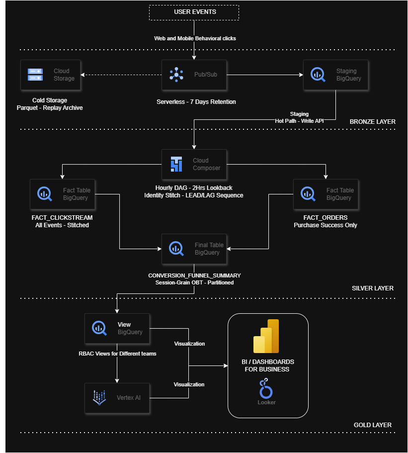

Our goal is to identify user clicks that successfully convert into actual sales, and map the exact engineering steps required to do it.
At a scale of 100M+ daily events, stateless, high-volume click tracking cannot simply be continuously updated against stateful, low-volume purchase ledgers without triggering massive write congestion and data warehouse performance degradation.
A horizontal perspective of data processing. Offloading streaming loads to a decoupled Three Layer Pattern to secure analytical operations.

The serverless ingestion spine designed to act as an elastic shock absorber for all streaming behavioral packets.
Splitting arriving tracking items to balance low cost retention with immediate query access.
Proxies extract top-level keys via shallow parsing, storing the complete nested payload string directly into a native JSON column format.
{
"event_id": "9a2f4b8c-1e7d",
"session_id": "sess_99x",
"event_type": "product_click",
"event_timestamp": "2026-05-18T09:04:15Z",
"payload": {
"product_id": "prod_77y",
"category": "electronics"
}
}
| event_id | session_id | event_type | event_timestamp | raw_payload (JSON Data Type / Contents) |
|---|---|---|---|---|
| 1a2b3c4d | sess_99x | home_page_view | 2026-05-18 09:00:00 | {"user_id": null, "device_context": {"os": "iOS"}} |
| 5e6f7a8b | sess_99x | search_input | 2026-05-18 09:02:05 | {"user_id": null, "payload": {"query_string": "keyboard"}} |
| 3c4d5e6f | sess_99x | product_click | 2026-05-18 09:04:15 | {"user_id": null, "payload": {"product_id": "prod_77y"}} |
| 7a8b9c0d | sess_99x | user_auth_login | 2026-05-18 09:05:00 | {"user_id": "usr_ashok_92", "payload": {"method": "oauth"}} |
| 1e2f3a4b | sess_99x | add_to_cart | 2026-05-18 09:06:24 | {"user_id": "usr_ashok_92", "payload": {"product_id": "prod_77y"}} |
| 9c0d1e2f | sess_99x | purchase_success | 2026-05-18 09:08:30 | {"user_id": "usr_ashok_92", "payload": {"order_id": "ord_88124x", "gross_amount": 149.99}} |
user_auth_login token event to cleanly stitch identities back across the full anonymous window.Connecting anonymous guest sessions to authenticated user profiles through a non destructive relational bridge.
Stitching isolated event items into an ordered timeline using window functions to trace clear user movements.
| Idx | Session ID | Event Type | Prev Action | Next Action | Delta Secs |
|---|---|---|---|---|---|
| 1 | sess_99x | home_page_view | NULL | search_input | 0 |
| 2 | sess_99x | search_input | home_page_view | product_click | 125 |
| 3 | sess_99x | product_click | search_input | add_to_cart | 130 |
| 4 | sess_99x | add_to_cart | product_click | purchase_success | 129 |
| 5 | sess_99x | purchase_success | add_to_cart | NULL | 126 |
How our hourly scheduled SQL pipeline parses the raw staging JSON and routes data into decoupled warehouse entities.
SELECT session_id, event_type, -- Downstream JSON path extraction expressions LAX_STRING(raw_payload.payload.product_id) AS product_id FROM stg_clickstream_events;
SELECT LAX_STRING(raw_payload.payload.order_id) AS order_id, session_id, LAX_NUMERIC(raw_payload.payload.gross_amount) AS gross_amount FROM stg_clickstream_events WHERE event_type = 'purchase_success';
We isolate transactional financial realities from raw web activity traffic volumes inside our storage core.
| Column Name | Type | Key Architectural Role Context |
|---|---|---|
| session_id | STRING | Cluster Key: Groups chronological user browser loops. |
| sequence_num | INT64 | Sort key mapping step chronology arrays. |
| user_id | STRING | Nullable master customer index; mapped post resolution. |
| product_id | STRING | Foreign lookup dimension index relating to product catalog trees. |
| device_type | STRING | Context tracking dimension used for frontend responsive metrics. |
| event_timestamp | TIMESTAMP | Event timestamp at which the click took place |
| Column Name | Type | Key Architectural Role Context |
|---|---|---|
| order_id | STRING | Primary key mapping absolute transactional truth. |
| session_id | STRING | Anchor binding checkout events straight to the funnel loop window. |
| gross_amount | NUMERIC | Target pre-normalized revenue milestone asset trace values. |
| created_at | TIMESTAMP | Definitive backend database clock synchronization milestone. |
| payment_type | STRING | Payment gateway categorical tracing identifier. |
Compressing structural links into a wide matrix to deliver sub-second dashboard loading performance numbers.
| Column Name | Data Type | Optimization & Serving Function Context |
|---|---|---|
| session_date | DATE | Partition Key: Avoids multi-year table scans. |
| product_category | STRING | Cluster Key: Primary landing category per session; optimizes data filtering speeds. |
| session_id | STRING | Unique path sequence key isolating user interaction sets. |
| user_id | STRING | Stitched identity mapping early actions directly to user rows. |
| traffic_source | STRING | Marketing acquisition channel used for direct attribution analysis. |
| session_start_time | TIMESTAMP | Calculated MIN(event_timestamp) marking absolute session ingress start. |
| session_end_time | TIMESTAMP | Calculated MAX(event_timestamp) mapping session boundary closure. |
| has_purchased | BOOLEAN | Pre-calculated flag targeting immediate conversion performance scans. |
| attributed_revenue | NUMERIC | Pre-joined financial outcome metric mapped straight from order files. |
How our data pipelines execute automated dependencies securely every sixty minutes without data corruption.
Isolating warehouse storage logs from business users via a centralized virtual governance boundary.
Using a sliding calculation layout to maintain a one hour freshness SLA without rising compute fees.
Transforming high velocity streaming data arrays into a structured, secure corporate intelligence framework.